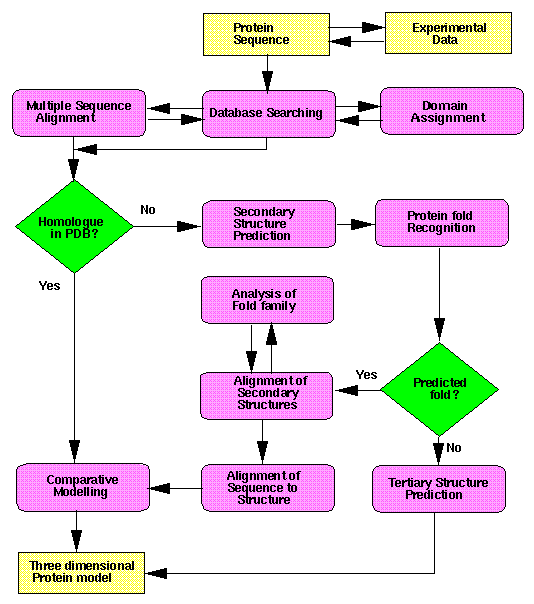
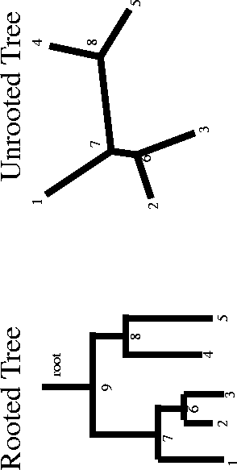

7 PROTEIN ANALYSIS AND IDENTIFICATION
7.1 INTRODUCTION
7.1.1 Computational Protein Analysis
A protein sequence can come from gene predictions,
papers, database matches or even peptide sequencing. Once we have a protein
sequence we want to try to identify it and find out something about its
function. You may already have ideas about the physiological function,
so you could use bioinformatics methods to support or refute these. It
is important to use and critically evaluate information from different
sources (including the nucleotide analysis), all of which will aid the
determination of possible function.To do this
we can look for:
-
Similar sequences in the sequence databases.
-
Distinctive patterns/domains associated with protein function.
-
Functionally important residues.
-
Secondary and tertiary structure which provides more insights than the
primary structure.
-
Look at some physical properties e.g. potential hydrophobicity or hydrophilicity
and isoelectric point (to aid isolating the protein).
Protein sequence analysis is often more useful
than nucleotide sequence analysis for a number of reasons:
-
Protein sequences usually contain a higher signal
to "junk" ratio.
-
Database similarity searches are about five times more sensitive.
-
It is often closer to the actual biological function.
-
The 3-D structure of similar proteins may be known.
-
Evolutionary relationships are sometimes more visible.
-
Annotation of protein sequence and related databases is often comprehensive.
Check your Predictions with Wet Biology!
-
Don't be overly trusting of computers and databases!
-
Check literature.
-
Do some appropriate lab work.
e.g. Enzyme inhibitors, crystallography, expression profiling, functional
analysis with model organisms, protein fingerprinting etc.Figure:
Structure Prediction Flow chart by Robert Russell
7.2 PROTEIN SEQUENCE ANALYSIS
7.2.1 Steps in Protein Sequence Analysis
-
Look for known distinctive patterns.
-
Conserved protein domains or regions can be very
useful in trying to determine which protein family a sequence belongs to
or where possible catalytic sites are located.
Patterns can be analysed using motifs (regular expressions) or profiles
(statistical models). The PROSITE database is an example of such a pattern
database.
-
Find homologous (paralogous and orthologous) sequences
using a database similarity search.
-
Homologues may be well annotated and their function
documented in the literature.
-
Phylogenetic analysis may reveal evolutionary relationships between proteins
and help you decide which family or super family a protein belongs to.
N.B. Be aware of convergent evolution.
-
Identify structural features.
Having some idea of structure would help you predict
possible functions: knowing the protein fold along with conserved domains
(or even residues) may tell you what type of function this protein is likely
to have.
-
See the structure prediction flow chart figure.
-
Search against sequences or structures in tertiary structure databases(e.g.
PDB). If a homologue exists in the PDB database, it is very likely that
they have similar folds. (But there are examples of proteins with similar
sequences, but different folds. The prion involved in the BSE related disease
is an example of this).
-
If there are no clear homologues in the PDB database, secondary structure
prediction is an option. Secondary structure predictions can give some
information about the location of helix or beta sheets in the protein.
-
Tertiary structure prediction is another option, but a very difficult one
if only the primary structure is know.
7.3 PRACTICAL IN PROTEIN SEQUENCE ANALYSIS
Objectives
The purpose of this practical is to search for known
motifs, find homologues, do a multiple alignment, predict secondary structure
and look at a 3D structure of a protein. We will mainly use the GCG SeqLab
interface and a web browser.
Practical
We will use a sequence of a small peptide that we
imaginatively called ‘unknown’. The protein sequence was derived from
a genomic fragment that came from a small green algae species, but that’s
about all we know about it. The file is in FASTA format, but since we will
be using GCG for most of the exercise, we need to reformat the sequence
first.Reformat a fasta format sequence
into GCG format
-
Start GCG from the HGMP-RC Menu, if you have not
already done so.
-
Move into the directory called ‘chapter7’ with the cd command
Unix % cd chapter7
-
The "unknown" peptide sequence will be in a file
called unknown.fasta. If this file does not exist, then you will need to
create one with this sequence:
>unknown
MTKKIGLFYGTQTGKTESVAEIIRDEFGNDVVTLHDVSQAEVTDLNDYQYLIIGCPTWNIGELQSDWEGLYSELDDVDFNGKLVAYFGTGDQIGYADNFQDAIGILEEKISQRGGKTVGYWSTDGYDFNDSKALRNGKFVGLALDEDNQSDLTDDRIKSWVAQLKSEFGL
-
Convert this fasta format file to GCG format e.g.:
Unix % fromfasta unknown.fastaUsing
unknown.pep as output file.
-
Just to check the output:
Unix % more unknown.pepNow
we have the GCG format file, we can start up SeqLab.Starting
SeqLab and Selecting a Sequence
-
To start up SeqLab as a separate process enter
Unix % seqlab &
-
Two windows of imposing blueness emerge. Click the
OK button on the less than useful one.
-
If you find yourself in Editor mode (bright white stuff in the middle),
click and hold on the Mode: pull down menu (left hand side, about and inch
down) and select the Main List option.
-
Deal once more with the SeqLab nonsense defaults. Elect to create a new
working list by selecting the New List option from the SeqLab Main window
File pull-down menu . This done, a new stunted little window labelled New
List File will stumble bluely forth. It will enquire abruptly of you:
-
Name of new list file:
-
To which you should firmly reply:
-
./working.list
-
meaning
that you want you new working list to be stored in a file called working.list
which should reside in the current directory (".") . Once you have entered
the name of your new working list, click on the OK button of your New List
File window , which will then, with all the satisfaction of a job well
done, fade away. Note that the setting of the List section of your SeqLab
Main window has been updated appropriately .
-
Next, you should think about the SeqLab "working directory". That is the
directory into which SeqLab will store all its output. This is preserved
between runs, so it will be the "working directory" that was appropriate
last time you used SeqLab , which could be just about anywhere. Select
Preferences from the Options pull down menu. A new blue Preferences window
will appear. Make sure you are looking at the General preferences, if not,
select General from the Preferences window Preference pull down menu .
If the Working Dir ... section of the Preferences window is not already
set to the current directory, click on the Working Dir ... button. A Change
Working Directory window (blue, as it happens) will appear. Select an appropriate
directory using your left hand mouse and then click on the OK button in
all blue windows other than your SeqLab Main Window.
-
We now want to add our peptide sequence to our main list:
File →
Add Sequences from → Sequence Files
-
In the Filter field, change the *.seq to *.pep and click
on Filter, so that the programs searches your directory for
*.pep
files!
-
Left click on your unknown.pep file to select it. Finally
left-click on Add.
-
You should
now have a single highlighted entry in your Main List window
-
A rapid Double-Left-mouse-click on this and you will see the entry.
We now are ready to do some research on the unknown
protein. The first thing we are going to do, is to find out if there are
any known motifs in the protein. We are going to use the GCG program Motifs
and if we have time enough we are going to explore a web based system that
looks at protein domains in a different way (using Hidden Markov Models).
Motifs
The GCG program Motifs uses the Prosite database
of known protein domains. In Prosite, the domains are (mostly) described
as patterns. For instance, it will describe the heme c binding domain
in cytochromes as C-X{2}-C-H, which means that the domain consist of a
cystein amino acid residue, followed by any two amino acids, followed by
a cystein and a histidine residue[6].
If you want to know more about Prosite you can take a look at the Prosite
web page (http://www.expasy.ch/sprot/prosite.html).Looking
for Motifs1
. In GCG using the Prosite Database
-
Motifs is GCG's program for searching for known prosite
motifs.
-
Highlight your_source_sequence (unknown.pep) with the left mouse button.
Select Functions->Protein Analysis->Motifs
-
Click on Run
-
Select
Windows->Job
Manager
and wait a few seconds for it to complete.
-
Select
Windows->Output Manager
-
Select Display and examine the output from this Motifs search. The peptide
sequence should contain a few motifs. Note that some motifs will be found
by chance and will be biologically irrelevant.
2 . Using Pfam (if there is enough time)Go
to the pfam page http://www.sanger.ac.uk/Software/Pfam/(Follow
the link from the HGMP Home page The Genome Web -> Protein Database
-> Pattern and Domain Databases -> Pfam)
-
Choose
Protein HMM Search
-
You need your sequence in FASTA format. So you should use the unknown.fasta
file that you used earlier.
-
Now paste this FASTA format file into the Protein Sequence box[7]
-
Set this
searching by clicking Submit Query
and carry on with the exercises
whilst it runs.
The output of the GCG Motif program, shows which
patterns were found and where they match in the sequence. It also contains
some information about the pattern. The third pattern in your list should
receive some special attention !The other
patterns could also be important, but it is left to the reader to determine
why they are not, in this case.The third pattern
should be a Flavodoxin motif.[8]
Read the information that comes with the patterns to see if this tells
you anything about the function of your protein. The top of the entry shows
three lines. The first line is the complete pattern as it is recorded in
the Prosite database. The second line is the pattern which matches the
query sequence, which is a subset of the complete pattern. The third line
shows the actual query sequence. The gap is just there to distinguish the
pattern sequence from the surrounding sequence.If
performed, the results of the Pfam exercise should confirm the results
of the Motifs search.
BLAST IT !
Now we have a fairly good idea what special domain
our protein has, we might want to find out if there are proteins in the
sequence databases that are similar to ours. Similar proteins are often
(but not always !) homologues of each other, so this might gives us an
idea of the function of our protein. But beware: sequence similarity and
homology are not necessarily the same, as it could just be evolutionary
convergence or chance.We will use our sequence
in a BLAST search against the SwissProt database. The SwissProt database
does not contain ALL known protein sequences, but it is very thoroughly
annotated. For many proteins in the database the function is known, so
this will help us in our search for the function of our unknown protein.Look
for Homologues using BLAST
-
Highlight your source sequence with your left mouse
button. Select Functions->Database Sequence Searching->Blast
-
Search a protein database. For the “Search Set”, “local SwissProt”
is grand (it searches sw_new automatically)
-
Click on Run
-
Please continue with next exercise, while this runs.
-
Select
Windows->Job Manager
.
-
Select
Windows->Output
Manager
-
Select Display and examine the output from this analysis using the information
in section 6.3.3. Note the probability values and how unlikely it is that
the flavodoxin matches could have occurred by chance!
We now have mounting evidence that our protein is
a flavodoxin. Both the Motifs search (and Pfam) and the BLAST data are
in agreement on this. We will now assume (although without any other knowledge
about the protein, this is a bit tricky...) that our protein is a flavodoxin
and we are interested in comparing our protein to other members of the
flavodoxin group.We will do this using multiple
sequence alignments.
7.4 MULTIPLE SEQUENCE ALIGNMENT
7.4.1 Why?
-
Highlights regions of similarity, divergence and
mutations.
-
Provides more information than a single sequence. (e.g. use for creating
a profile for an even more sensitive search to find other more distant
family members.)
-
Creating a consensus will highlight functionally important domains or residues.
-
Could reveal errors in protein sequence prediction.
-
Secondary structure and other predictions improve.
-
Evolutionary analysis (phylogeny).
-
Find novel motifs ( e.g. using Hidden Markov Model techniques).
-
Selection of appropriate primers for a gene family.
7.4.2 Multiple Alignment Methods
-
Automatic: Clustalw, pileup, HMMer and AMPS. Good
when more than 50% identity.
-
Semi-automatic: HMM’s (hand craft the first alignments, then automatic)
-
Fully hand crafted: Cinema, lineup etc. Slow!
7.4.3 How do I get a better alignment?
-
Are your sequences actually homologous?
-
Alignments should be done on appropriate sequences. The sequences you choose
to align will depend upon what you wish to achieve; you may wish to analyse
a representative spread of a gene family or compare a specific gene in
various organisms etc.
-
The sequences may have errors, insertions, deletions etc.
-
Once you have an approximate alignment, it is then best to edit this using
your knowledge about the proteins.
-
Choosing only sequence fragments which share a common region may give a
better alignment than full length sequences.
-
Structural information is often more conserved than sequence, so
use this.
-
Additionally you should also try altering program parameters.
7.4.4 Practical: Creating a Multiple Sequence Alignment
We will align a small number of flavodoxin proteins
with our now-not-so unknown protein. We will first use lookup to
retrieve some of the flavodoxin proteins from the database and do a multiple
alignment using both pileup and clustalx.Getting
sequence from the database using lookup
-
From the GCG SeqLab main window choose the lookup
program: Select Functions->Database reference searching ->Lookup
-
In the new Lookup window, check that the SwissProt and SwissProt New databases
are checked. This will make sure that the search will be carried out only
on the SwissProt database.
-
In the Definitions field fill in
flavodoxin
-
We will only do the alignment on a small set of flavodoxins,
to keep this example manageable, so we are going to restrict our search
a bit. Click the Options... button to get to the options window.
-
We will restrict the search to proteins that were entered in the database
before 30-Jun-90, have a minimum length of 130 and a maximum length of
180.
-
Enter
180 in the field Longest sequence length
-
Enter
130 in the field Shortest sequence lengt
h
-
Enter
30-jun-90
in the field Sequence dated on or before dd-mon-yy
-
Click on the Close button to make this window go away and then click
on the Run button to start the search.
-
If everything worked out fine, you will have the results of the search
appear in the SeqLab Output Manager window
.
-
The result
of the search will be called something like
lookup-??.listwhere ?? is a number. This list file is a file that
we will use in our further research, so we are going to give it a bit more
sensible name. Click on the Save As... button of the Output Manager window
and save it under the name flavodoxin.list.
-
Take a look at the file by clicking the Display button.
Now we have a so-called GCG list file. A list file
is a file that contains references to sequence files; it does not contain
the actual sequences. It usually contains references to more then one sequence
and this file can be used in many of the GCG programs, like pileup.
The format of the list file is very simple. Every line after the double
dot (..) contains one reference to a sequence. Everything after an exclamation
mark (!) is considered to be a comment and is ignored. See the appendix
for more information on GCG list files.The
list file we have just created contains 8 lines that do not start with
an exclamation mark and a lot of lines that do. These comment lines show
some of the first lines of the entries in the databases, and although they
make the list file look a bit complicated they can be ignored. The sequences
that are listed in the list file are in the standard GCG format which is:
databasename:entryname.
The 8 sequences all come from the SwissProt
database so start with SW_RELEASE: followed by the entry name of the sequence
in the database. A sequence reference in a list file doesn’t have to
be a database reference but can also be a filename of a file containing
a sequence (in GCG format).In order for us
to be able to use our unknown protein together with the 8 database entries,
we are going to add the filename of our unknown protein file to the list
file[9].Adding
filename to list file
-
We will edit the list file from within Unix, so find
the Unix window and edit the list file flavodoxin.list, using your
favourite editor. If you haven’t got a favourite editor yet, use the
simplest editor, pico. Thus enter :
Unix % pico flavodoxin.list
-
If you want you can remove the comment lines (<CTRL>
K), but this is not needed.
-
Go the last blank line and type
unknown.pep
-
Save the file and exit from the editor. In pico
that is :
<CTRL> X[10]
-
and presto! You have added our protein filename to
the list file.
-
Now we have changed our list file, we need to tell GCG that it can use
this list file in further analysis. We need to add the list file to the
main SeqLab window.
-
Go to the Output Manager Window
of SeqLab and click on the flavodoxin.list
entry.
-
Click on the button Add to Main List ...
-
Move to the SeqLab Main Window and check that the flavodoxin.list is there.
-
The list file will have a at sign ‘
@’ in front of its name.
This is the indication that the file is in fact a list file. Double clicking
on the list file will expand the list file, to reveal the sequences it
hid inside. Double clicking on it again will collapse the list.
Now we are ready to use the list file in our multiple
sequence alignment. We are going to use the GCG program pileup for
our first attempt.Using Pileup with
default settings
-
Select the flavodoxin.list from the SeqLab
main window (make sure it is highlighted).
-
Select the pileup program from the menu
Functions->Multiple Comparison->Pileup
-
As the heading implies we are going to run pileup with the default
settings, so to make sure we actually do that (somebody might have already
run pileup with some non standard settings) we click on the GCG
Default
button.
-
To start the alignment simply click on the Run button.
-
Wait a few moments and then check if you got results in the Output Manager
Window
.
-
Two files
will appear. Something called pileup_??.figure and a file called
pileup_??.msf, where ?? is a number. Take a look at them by selecting
them (one at the time) and pressing the Display button.
-
The first file is a graphical representation of how similar each of the
aligned sequences is to every other sequence[11],
this information is used to guide the order in which sequences are added
into the multiple alignment[12].
To get the best view of this output, make the display window as big as
possible. Note that the graphic does not grow with the size of the window;
you can make it do so by clicking on the Fit button.
-
The second file is a text file showing the final multiple alignment as
a MSF (Multiple Sequence Format) file.
-
Take a good look at this file, and look if the alignment makes any sense
to you.
The first residue of a protein is usually a methionine
amino acid, but in the case of the first 6 sequnces it is not. The last
three sequneces do have the methionine residue, but they are not ligned
up. Apparently the score was higher by not aligning them up and to begin
the alignment with some initial gaps. This does actually make some biological
sense, since it is knows that the extreme N-terminus is usually not very
important in the function of the protein (although there are offcourse
exceptions to this rule. At the C-terminus of the alignment the gap is
more pronounced and much longer. It’s not entirely certain that this
makes biological sense.The main problem is
that the default choice of pileup is not to penalise gaps at the
end of sequences (i.e. bits of longer sequences overlapping the main alignment
do not count as gaps and so do not reduce the alignment score). Here, pileup
has found it can arrive at a better score by not overlapping the end of
the six topmost sequences with the ends of the lower three sequences.At
this point, one might consider changing several parameter settings before
recomputing the alignment. For example, it might be worth considering a
scoring matrix that assumes a greater evolutionary distance between the
sequences it is aligning. For now, just make the most obvious parameter
adjustment (i.e. tell pileup to penalise end gaps in the same way
it penalises internal gaps) and try again.Using
Pileup with NON-default settings
-
Select the flavodoxin.list from the SeqLab main window
(make sure it is highlited).
-
Select the Pileup program from the menu
Functions->Multiple Comparison->Pileup
-
Click the Options... button to open the window showing the options.
-
Click the radio button labeled Penalize end gaps like other gaps
-
Close the options window by clicking the Close button.
-
To start the alignment simply click on the Run button.
-
Wait a few moments and then check whether you got results in the Output
Manager Window.
-
Two files will apear. Something called pileup_??.figure and a file
called pileup_??.msf, where ?? is a number. Take a look at them
by selecting them (one at the time) and pressing the Display button.
The output now looks a bit different, especially
at the C-terminus. Now the end gaps are treated as normal gaps, pileup
has found that it can arrive at a higher score by introducing an internal
gap and moving the ends of the lower three sequences more to the C-terminus.
So by changing one parameter we end up with a considerably different alignment.
It’s now up to you to decide which is better. Using only the sequence
information makes this a difficult task, not to say impossible. We need
more information about the proteins to decide which of the alignments is
‘better’. We could, for example, use structure information to determine
if the gaps that are created are located in the middle of some structural
important feature or active site. It is for instance much more likely that
a mutation (deletion/insertion) would occur in an relatively unimportant
part of the sequence. Structural features like aplha-helix and beta-sheet
structures are usually more preserved then unstructured sequences, so if
we could determine where the gaps are located, we could make a much more
informed decision on the quality of each of the alignments.This
exercise shows that one should never blindly trust computer programs (or
more accurately, algorithms) to be correct at least when using the default
settings. You should always make sure that you are aware of the parameters
and how they could influence the result.Extra
exercise: Using Clustalx
-
If there is enough time you could try a different
multiple alignment program, called clustalx. Clustalx is the graphical
frontend to the program clustalw.
-
Clustalx needs the sequences all to be in one file, so use the GCG program
topir to make a PIR multiple sequence file from the flavodoxin.list
list file:
Unix % topir @flavodoxin.listusing
something like flavodoxin.pir as output file.
-
Start clustalx using the WWW menu.
-
Load
flavodoxin.pir into clustalx and do a full alignment
-
Clustalx gives a nice graph of the alignment quality, making it easy to
asses regions of high similarity.
Even if a program/algorithm produces an alignment
that looks good, it may be necessary to edit it manually. You may have
some information about the proteins that isn’t correctly accounted for
in the alignment. The alignment program might not have aligned all the
functional sites or motifs correctly (Question: did pileup align
the flavodoxin motifs in our alignment ? Check the Motifs output). To correct
the alignment in GCG you can edit your alignment manually in the SeqLab
editor.Viewing and Editing Your Alignment
-
The output of the Pileup program is most likely
still lurking in the Output Manager Window
somewhere, and in order
to edit it, we need to move it to the Main list first and while we’re
at it, we had better change the name to something more meaningful.
-
Select the MSF file in the Output Manager Window
(
pileup_??.msf)
and select the Save As ... button.
-
Choose a sensible name for the file, like flavodoxin.msf
-
Select
the new MSF file,
flavodoxin.msf
, in the Output Manager Window
and
click the
Add to Main List button. The MSF file should now have
appeared in the Main list.
-
Highlight
flavodoxin.msf on the Main List.
-
Change the Mode into Editor
-
In real
life you would need to edit the alignment, or even just select a representative
domain, so experiment:
-
insert/delete gaps (Space key/Back Space)
-
Find patterns by highlighting the sequences and choose find from the Edit
pulldown menu (find the flavodoxin pattern for instance...Look in the Motifs
output to get the pattern).
-
Sort the aligned sequences by name
-
Create a consensus (highlight the sequences and choose Consensus from the
Edit pulldown menu).
7.5 PROFILES
An alignment can be used to search for other proteins
that are similar to the ones used in the alignment. This can be used to
refine the family of proteins used in the multiple alignment. From the
multiple alignment a profile can be constructed that can be used to search
the sequence databases.
7.5.1 Profile Searching
Background
-
A profile is a table that contains all of the comparison
information for a group of aligned sequences.
-
Profiles are used to find sequences similar to those of the alignment as
a whole, so database searching can be more sensitive and selective.
-
It contains as many rows as there are positions in the aligned sequences.
-
Each row contains a score for the alignment of the corresponding position
of the aligned sequences with each possible residue.
-
Match values are higher at conserved positions.
-
Care must be taken that the profile is balanced. (i.e. not skewed by too
many very similar sequences).
Example part of a profile
(17 Cons A B C D E F G H I K L M N P Q R S T V W Y Z Gap Len ..) s
(18 M 0 -30 -60 -40 -20 50 -30 -30 60 20 130 150 -30 -20 0 20 -30 0 60 -30 -10 -10 100 100) s
(19 G 43 34 6 39 29 -32 89 -15 -12 -4 -17 -3 22 16 12 -16 34 25 18 -65 -44 18 100 100) s
(20 P 34 13 0 16 21 -50 24 16 -14 9 -21 -14 5 93 26 18 27 21 4 -60 -54 24 100 100) s
(21 R -10 4 -26 2 4 -15 -15 25 -6 32 -1 21 4 12 30 58 -1 -6 -5 54 -26 17 100 100) s
(22 R -30 10 -30 0 0 -50 -30 50 -30 80 -40 20 10 30 40 150 10 -10 -30 140 -60 20 100 100) s
(23 L -4 -32 -47 -32 -20 75 -28 -15 60 -20 100 86 -27 -17 -8 -27 -25 -4 64 22 17 -14 100 100) s
(24 L -10 -50 -80 -50 -30 120 -50 -20 80 -30 150 130 -40 -30 -10 -40 -40 -10 80 50 30 -20 100 100) s
(25 L -6 -32 -47 -32 -20 81 -34 -15 64 -20 100 86 -27 -20 -9 -27 -25 -4 60 25 19 -14 100 100) s
(26 V 11 -17 4 -17 -15 24 7 -20 76 -15 64 50 -22 3 -13 -22 -10 11 100 -44 -3 -14 100 100) s
(27 A 91 7 10 13 16 -19 38 -8 8 -3 9 13 8 28 11 -22 21 24 20 -44 -15 10 100 100) s
(28 ! 11) s
(29 L 34 -9 -9 -6 -2 18 7 -10 29 -9 40 36 -7 6 0 -19 -1 9 38 -15 -1 -2 100 100) s
GCG's Protein Sequence Profiling
-
profilemake, makes a profile from a multiple
sequence alignment.
-
profilesearch, uses this profile to search databases.
-
profilesegments, creates alignments showing similarity found by
profilesearch.
-
profilegap,
aligns a sequence with the profile.
-
profilescan, finds structural and sequence motifs in protein sequences.
Hidden Markov Models (HMMs)
-
HMMs can be used to do multiple sequence alignment
and database searching, using statistical descriptions of a sequence family's
consensus.
-
They can align very large numbers of sequences (thousands).
-
Database search sensitivity is, in many cases, as sensitive as structure-based
"inverse folding" methods such as threading.
-
We expect that over the next few years, programs will increasingly use
these rather than table profiles.
Practical: Protein Sequence Profiling
In this practical we are going to use a multiple
sequence alignment file and search this against a subset of the SwissProt
database. The major problems with profiles is the computational time required
and choosing a representative group of sequences.Create
a GCG Profile
-
Select the flavodoxin.msf file from
GCG’s Main Window
main list.
-
Select
profilemake from the Multiple Comparison
menu
(on the Functions menu) and run this with the default settings.
-
When it has finished, the output will be in the Output Manager Window
under
a name like profilesearch_??.prf.
-
Give the
.prf output file a sensible name, like flavodoxin.prf (Use
Save As...
).
Now we have a profile, we can use this to search
for sequences that are similar to this profile. We will use the SwissProt
New database to cut down on the computing time needed, since searching
by profile is quite CPU intensive. In real life you should use all the
databases that are available and contain the information that you want
to use.Search for Sequences Similar
to this Profile
-
Select
profilesearch from the Database
Sequence Searching menu in
the Functions menu.
-
Click
the Search set ...
button to select a database to search against.
In the new Search set window
, select the Add Database Sequences
...
button.
-
Select the SwissProt New
database and click the Add to Search
Set
button, followed by the Close button.
-
The
SwissProt_New:* database should now be listed in the Search
Set window
.
-
Click
on Query profile
and select the profile you created earlier (
flavodoxin.prf)
-
Click
on run and open your Job Manager
-
This will take a few minutes, even on this reduced set. A useful thing
to do would be have a browse through the help on the GCG(SeqLab) package
and Protein Profiling in particular.
-
When your job completes analyse the output and compare it to the BLAST
results from just your source protein.
The output of profilesearch would allow you
to refine your sequence set, adding other members of the flavodoxin family
of proteins and doing another multiple alignment. You could go through
several rounds of refining and searching, until you are satisfied that
that the set you have is a good representation of the family.
7.5.2 Secondary structure prediction
Now it’s time to try to predict some structural
aspects of your protein, like secondary and maybe even tertiary structure.
This is a difficult but fast growing area. The early programs for predicting
secondary structure, like those found in GCG, relied on relatively simple
algorithms to predict secondary structure, using probability matrices derived
from known structures. They could usually be tried on single sequences.
More recent programs use more intricate algorithms using aligned sequences
and neural network-like algorithms such as Hidden Markov Models.It
is best to view the results from different algorithms and critically evaluate
the results. On its own, secondary structure prediction is probably not
greatly helpful, but you should review this output when you could then
try and explain features of the multiple sequence alignment. There are
many excellent programs for attempting to predict 3-D structure, but this
area is beyond the scope of this introductory course. Predicting
Secondary Structure using GCG’s Pepplot
-
Highlight
unknown.pep with your left mouse
button. Select Functions->Protein Analysis->PepPlot
-
Click on Run
-
Select
Windows->Job
Manager
and wait a few seconds for it to complete.
-
Select
Windows->Output Manager
-
Select
Display and examine the output from this analysis.
This plots various measures of protein secondary structure and hydrophobicity.
Note: These algorithms are old and (therefore ?!)
not very good; try some of the WWW resources like jpred. This runs
lots of programs together and tries to produce a consensus.Predicting
Secondary Structure using jpredGo
to the main page of jpred at http://circinus.ebi.ac.uk:8081/
or follow the link from the WWW menu Protein->Secondary
structure->Protein Sequence Analysis resources elsewhere on the Web->Jpred
-
Click on Submit sequence
-
Enter your eMail address (use mrna??@hgmp.mrc.ac.uk
where ?? is a number) in the eMail box
-
Paste in your sequence (
unknown.fasta) like you did for the Motifs
exercise.
-
Choose the Single sequence – aa codes only
option for the input
file.
-
Run the prediction by pressing Submit and wait for the results.
Compare the results of the Peplot and the jpred program.
Do they agree ?You could also use your MSF
file in jpred. Try to do this if you feel confident and compare the results
to the single sequence entry you made.At the
HGMP we offer a few more programs and links to other pages, that can do
secondary structure predictions. They can be found at http://www.hgmp.mrc.ac.uk/Registered/Menu/prot-2-struct.html
or follow the links from the WWW menu Protein->Secondary structure.
7.5.3 Tertiary structure
Knowing the 3D structure of a protein is a very important
step (but don’t forget the wet biology !) towards fully understanding
the function of a protein. To get information about the structure of a
protein, one should start to investigate whether the structure of a closely
related protein is known. Two proteins that are closely related may have
similar structures although this isn’t necessarily true. To investigate
whether our unknown protein has a close relative whose 3D structure is
known, we could do a BLAST search against all sequences of which the 3D
structure is known. At the moment we can’t do this at the HGMP but other
sites do offer this possibility, and it is left as an extra exercise for
the reader the find out where and how. (Hint: try the EBI at http://www.ebi.ac.uk/).An
alternative is to make use of the cross-references in the sequence databases.
The database entries of many sequences contain references to entries in
other databases. For example, for a protein entry in the SwissProt database
there is a reference to the nucleotide sequence that encodes this protein.
If the 3D structure of a protein is known, there is a reference to the
entry in the PDB database of known 3D structures and so on.For
our unknown protein we should look at the entries for proteins that show
high similarity to our protein, but since the suspense is probably killing
you by now we will tell you that indeed for a number of sequences that
are very similar to our unknown protein, the 3D structure is indeed known.
We are going to take a look at one of them.3D
structure of our unknown protein
-
Our unknown protein has a VERY high similarity to
the flavodoxin protein of an Anabaena species. You may have already
noticed this before. In the BLAST search against the SwissProt database
the entry FLAV_ANASP was almost identical to our unknown protein.
-
Go back to the GCGMain window
.
-
If we
look at the entry of FLAV_ANASP by double clicking on the flavodoxin.list
list file, and subsequently on the entry SW_RELEASE:FLAV_ANASP, we see
two frames.
-
The lower frame contains the sequence and the upper frame contains a lot
of lines, describing the entry in the SwissProt database.
-
If we scroll down to a line starting with DR we see a line saying :
-
DR PDB; 1FLV; 31-OCT-93
-
This lines tell us that there is an entry for this FLAV_ANASP protein in
the PDB database (the database containing all the 3D structures) under
the name of 1FLV. This means there is a 3D structure for this protein
-
To view the 3D structure we have to type in a long and strangely formatted
web address:
-
Go to a netscape (or other browser) window and find the location
field at the top of the page or, if it is not showing, choose the Open
page
menu item in the File menu and type in the following HTTP
address:
http://www.imb-jena.de/cgi-bin/ImgLib.pl?CODE=1flv(taking
great care to get the case right)
-
This will take us directly to a page about 1FLV.
-
When we click on the WebMol link we get a chance to play around
with the structure (It will take a while before the structure will actually
show; WebMol is written as an JAVA Applet and these are notoriously slow).
-
Try rotating the structure by holding down the left mouse button and dragging
it around. Use some of the options on the right of the screen to make a
space filling object or to see where the FMN ligand is (Hint: click the
Hetero atoms button).
So.....Now we know what our unknown protein is !
It’s a flavodoxin, involved in electron transfer and we even saw it’s
picture...Not bad for a few hours work.Now
we know that our flavodoxin is part of a family of flavodoxins, we might
want to know how our protein is related to the others. For that we need
to go into an area called Phylogeny.
7.6 PHYLOGENY
7.6.1 Why
Phylogeny is the relationship of things. Phylogenetic
trees can show us how sequences are related.Phylogeny
is a very complicated business and we won’t go into much detail in this
introductory course. There is a completely separate course just for phylogeny
if you are interested.

7.6.2 Phylogenetic Methods
Phylogeny relies heavily upon statistics which it
uses to predict evolutionary trees. Trees can be rooted or unrooted. There
are several well used ways of predicting these trees.
Clustering
A distance matrix is made with the pairwise distances
between the sequences. The sequences are then progressively clustered until
a tree is created. (This is the method of clustalw and pileup) The simplest
method assumes that evolution is constant over the tree (
unweighted-pair
group method
(UPGMA)), whereas Neighbour-Joining(NJ) does not
make this assumption, instead it searches for a pair of sequences/clusters
that can be joined in a node that has the least sum of distances.
Generate and evaluate alternative trees
-
parsimony: searching the tree with the smallest
number of point mutations.
-
maximum likelihood
: computing the probability of observing the
alignment, for a certain model of evolution and a given tree; the “best”
tree has the highest probability.
If one assumes that branch length is proportional
to evolutionary distance and that the evolutionary clock is constant it
is possible to search for a common root. Some of the phylogenetic programs
will produce rooted trees(e.g. phylip’s dnamlk).N.B.
There are different models of evolution and some programs allow you to
specify different rates of evolution in different parts of the sequence.In
an inverse order of likely accuracy and also computational time:
-
Parsimony methods
-
Distance methods
-
Maximum likelihood methods.
7.6.3 Improving the Reliability of the Tree
Significance of the tree
Bootstrapping is a common method for assessing the
reproducibility of the model, but perhaps not biological reality. The use
of bootstrapping in phylogeny:
-
Randomly picks columns in the alignment, duplicates
some and removes others.
-
Repeats hundreds of times.
-
You can then get a percentage for each node of the tree, for how often
the sequences below this node cluster together.
Domain Problems
Be aware of domain shuffling and fusion by recombination,
horizontal gene transfer between organisms etc. It may thus be best to
use single conserved domains.
Use other Information
Supporting information from your tree may be in domain
order, conserved introns etc., you do not have to just stick with the protein
multiple sequence alignment.Acknowledgements:
The above notes were largely based upon some superb articles in the Winter
1996, Belgium EMBnet Node Newsletter, Frank Wright’s notes and Sarah
Teichmann’s lectures for the Protein Domain Workshop 1998.
7.6.4 Phylogeny Practical
Produce a simple phylogenetic tree.
-
Go to the main GCG window.
-
Select the flavodoxin.msf file.
-
Select
paupsearch to produce a phylogenetic tree of your sequences;
Functions->Phylogeny->Paupsearch.
-
Choose
the parsimony method
.
-
You should
soon have a tree in your results output. We can do a lot better than this
e.g. getting the alignment far better initially and using paupsearch
more intelligently, e.g. the distance method and bootstrap for confidence.
7.6.5 Using Pie for a more reliable tree.
At the HGMP there is a WWW interface called PIE.
This is an interface to many programs, particularly those from the PHYLIP
package. A great deal of effort has gone into providing relevant online
help and PIE leads you through with hopefully sensible defaults. This should
reliably allow you to do some reasonable complex analysis. If you really
want to get down to complex detail then you should read lots of papers
and books, learn Unix scripting and run the programs yourself.Below
is an example you could use, but since a PIE job could take a whole night
to run, you better just take our word for it that it works ;-)
Running a Pie analysis
-
Select
PIE from the WWW menu and then
Run Now!
-
Enter
chapter7/flavodoxin.msf
in the Enter the name of a file in
your HGMP account box. (This program will also accept fasta and phylip
format files).
-
Your msf sequences are protein and interleaved.
-
Enter a project name: e.g. flavodoxin
-
Lets select the distance
analysis method
-
Change the Run options to: default with bootstrap
(100 replicates)
Select Process Parameters
You will now get a Pie: submit an analysis
page.
-
Enter the Analysis Name: protdist
-
Click on Check choices
-
and Finally, click on Perform Analysis
Viewing Pie Results
Whilst you are waiting for the processing, it would
be good idea to go back and look at the on line help for Pie and learn
more about the options you selected.When you
get an email saying that you results are complete:
-
Click on View your PIE Results now!
-
Click on your Project name
-
Click on your Analysis name
-
You will hopefully now have the desired unrooted tree and output files.
You should look at the output to get an idea of the reliability of the
tree.
You could repeat this with Maximum Likelihood, but please don’t as it
is computationally intensive. Note that there are many models and search
strategies with these programs.
[6]
A quick definition of the Prosite syntax: 1) Any amino acid matches it
self, unless preceded by the ~ sign, in which case any amino acid BUT the
one stated matches. 2) Any amino acids in parenthesis, means that any of
these amino acids will match, on this position. 3) Numbers between curly
brackets mean that the preceding pattern should be matched (between) this
number of times.[7]
Display the FASTA file from the unix prompt using the command: more
unknown.fasta
, selecting the complete text with your mouse and pasting
it into the box using the center mouse button. If you are using a PC workstation,
you may need to find out first how to Copy and Paste something, since you
probably can’t use the center mouse button (since you have none ;-).[8]
It is possible that it’s not the third motif on the list, since Prosite
may have changed.[9]
It is not strictly speaking necessary to do this, because we can simply
select both the list file and the unknown protein file together and do
the alignment, but it is easier to keep related sequences together.[10]
Hold down the Control key followed by the ‘x’ key.[11]
Although this graphic looks very much like a phylogenetic tree, it is important
to remember that it represents only how similar each sequence is to all
the other sequences.[12]
Broadly speaking, the multiple sequence alignment is built up by a series
of pairwise alignments. In a number of stages, pairs of sequences (and
sequence alignments) are aligned (merged or clustered) to form the final
multiple sequence alignment. At each stage, the two most similar entities
(as defined by the tree you are viewing), not yet aligned are aligned.